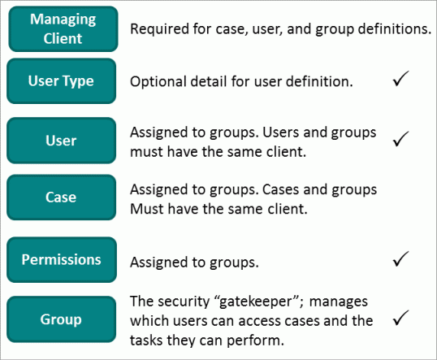

Eclipse combines comprehensive user management with flexibility that allows you to meet your organization’s security needs. Eclipse security is managed primarily in the Eclipse Web environment.
This page contains the following content:
Related pages:The following figure introduces the basic components of the Eclipse security model.

All members of the Super Admin group can manage Eclipse security. Others who have Case Administration permissions can also perform many of these tasks.
For greatest efficiency, address the following issues before defining security for your organization.
When Eclipse is first installed, an administrator is defined by the person who installs the product. This administrator is defined in the service layer, and is identified as the primary Eclipse system administrator. It is this administrator who will be responsible for all user and group activities until/unless he or she adds other users to the system administration group and create a case management group if appropriate for your site. Thus, identifying and adding other administrators is something to complete early in the process.
Ensure that your Eclipse license is sufficient for
the number of users you want to add. If you have any questions
|
|
Note: Starting with release 2015.2.0, Named User Tracking is available for Eclipse. The “named user” model allows product billing to be based on the number of users active during each month, rather than on a maximum number of named users. |
Contact your
Complete the following steps to plan your security approach:
Familiarize yourself with Eclipse security by reading Eclipse User Management Basics.
Based on the options available, evaluate your cases, users, and Eclipse permissions and determine a security approach for your organization.
For each case, determine which user groups need to be added and needed permissions. Use templates to expedite the process. Once a basic approach is determined, add/remove users and groups at any time, as a normal part of Eclipse administration.